説明書 (図でわかる)
スマホで見やすい、図と画面つきの説明書です。自分の役割のページを開いてください。
各店舗の担当 (黒服) の方向けのページです。画面の写真は、テスト用の子 (「テストてじゅん」) で試したものです。本物のキャストの名前・連絡先は載せていません。
A 美容室のアプリ
1. どこから開く?
- 美容師さん … LINE で送った URL から開く。
- 黒服 … 黒服ポータルの「美容室」ボタンから開く。
- キャスト … マイページから予約する。
この3つのどこから入れても、同じ予約表につながります。
2. 画面の見かた
1 ページ目: カレンダー

2 ページ目: その日の詳細
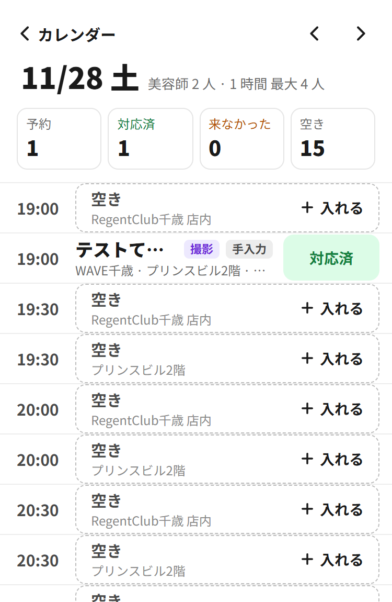
「空きに入れる」画面
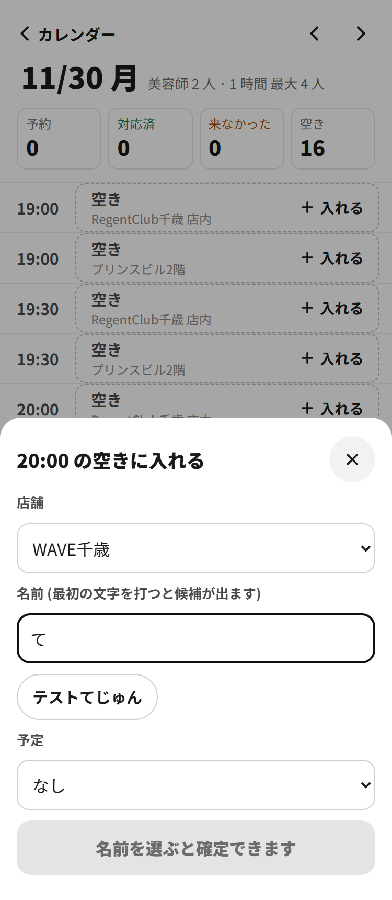
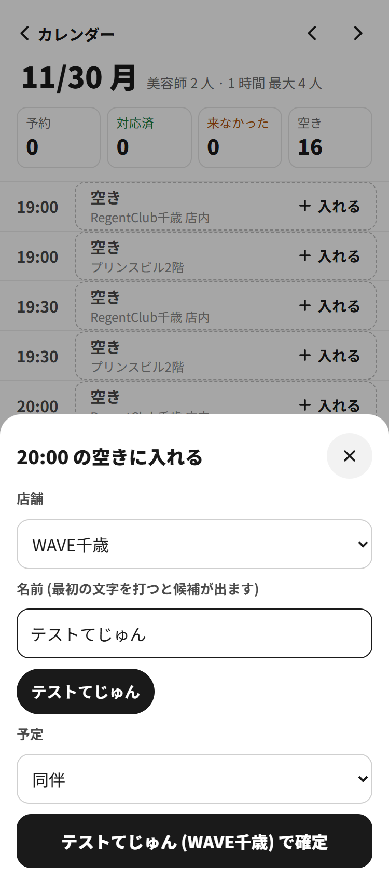
「特別枠」(撮影など)
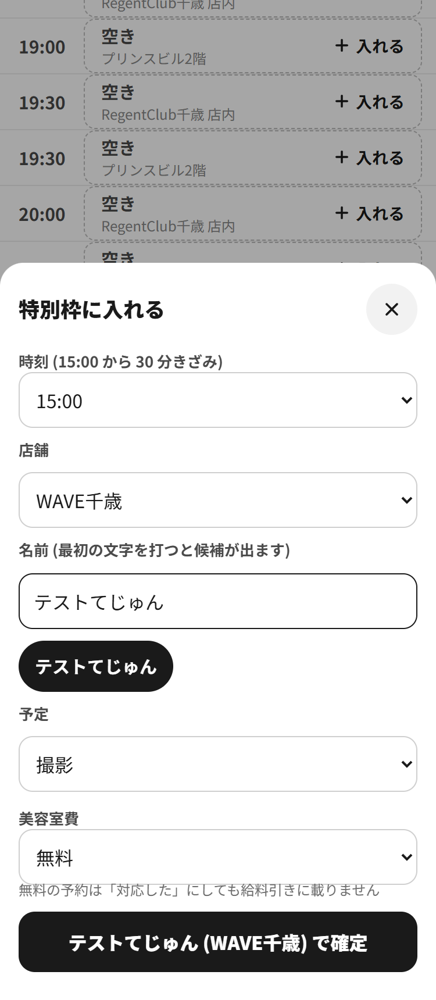
「対応を記録」画面
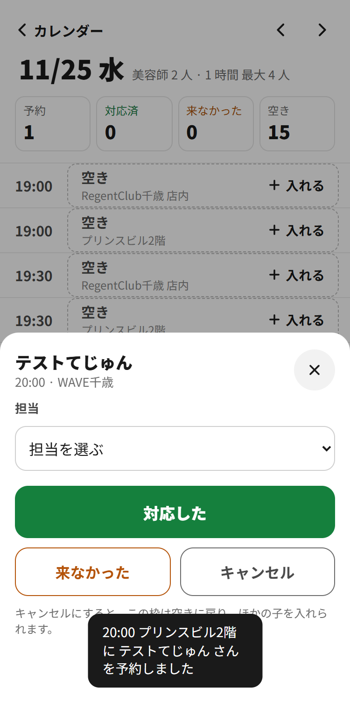
・対応した
・来なかった
・キャンセル … 押すと、その枠は空きに戻り、ほかの子を入れられます。
3. お金の流れ
給料から引くのは「有料で対応した」分だけ
| 状態 | 給料から |
|---|---|
| 有料で対応した | 引く |
| 撮影で美容室費が無料 | 引かない |
| 来なかった | 引かない |
| キャンセル | 引かない |
この「来なかった・キャンセルは引かない」は、いまの仮の決めです。変わったらこのページを直します。
黒服がやること
シートの「美容室 給料引き(日別)」タブを見て、その分を給料から引き、「引いた」にチェックを入れてください。
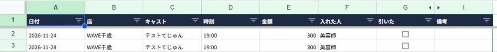
4. 美容師さんの明細 (請求書)
- 毎朝 6 時台 … 前の日の分の PDF が、Drive の「美容室 明細」に自動でできます。
- 月曜の 6 時台 … 前の週 (月曜から日曜) の分の PDF が、同じ場所にできます。
メールは送りません。Drive のフォルダに PDF が置かれるだけです。

PDF と同じ形で作った見本です (テストの予約の数字)。美容師さんごとに、有料で対応した件数・金額・無料・来なかった・キャンセルの数が並びます。
B 送迎の今の状況
1. 今の状態
仕組みはできていて、テストは合格しています。
本物のドライバー・キャストへの送信は、止めてあります。
本番は来年 (2027 年) からです。それまでは、テストを続けます。
本番は来年 (2027 年) からです。それまでは、テストを続けます。
2. AI (自動) でどこまでできる?
自動でやること
- 毎日 16:30 に、その日の出勤と送迎の希望を読む。
- 方面・便・車の席・ドライバーさんごとの条件 (例: 「プリンスビルから乗る子だけ」の工藤さん) を見て、だれをどの車に乗せるかを割り振る。
- ドライバーさんへ、LINE WORKS で連絡する。
- キャストへ、メールで、乗る便・車・ナンバー・色・乗る場所を連絡する。
- 取り消しが出たら、シートに赤く出す。
- 決まらなかった子がいたら、知らせる。
人がやること
- その日出られるドライバーさんを、「ドライバー出勤」のタブに入れる。
- 自宅へのお迎えの時刻を決めて入れる。
- 割り振りで決まらなかった子を、手で決める。
- 16:30 より後の急な変更。
出勤表の画面
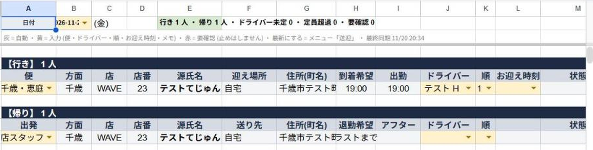
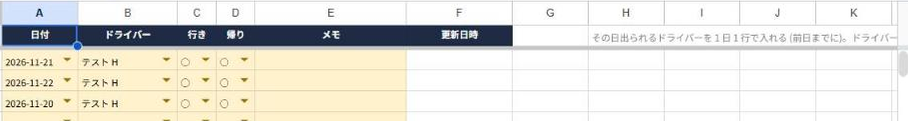
過去の形で試した結果 (バックテスト)
これまでの出勤の形をもとに、いろいろな日を想定して、自動の割り振りを試しました。
- 44 通りの条件で試して、決まりを破った割り振りは 0 件でした。
- ドライバーさんが全員出られる日は、決まらない子が 0 人になりました (いちばん難しかった札幌の行きの 9 人も、割り振りの工夫で決まるようになりました)。
- ドライバーさんが少ない日 (たとえば 7 人) は、席が足りず決まらない子が出ます。その子は「人がやること」のとおり、手で決めてください。
9 人から 0 人になったのは、11/20 の午後の改良のあとの数字です。
まだ決まっていないこと (山本さんに聞いています)
- 高橋さんの「近場」は、どこまでか。
- 小野さんの、金曜と祝日の前の帰りを、入れてよいか。
- ドライバーさんごとの車の色。
答えが来たら、このページを直します。それまでは、安全な側 (入れない) で動きます。
3. LINE WORKS への届きかた
- 「本日の送迎」ルーム … 全体の表が届く。
- 各ドライバーさんへ 1 対 1 … 「本日の担当」が届く。
- 管理者 … 16:30 の結果が届く。
下の画像は、文面の見本です (名前はテスト用)。LINE WORKS の実際の画面ではなく、同じ文面を吹き出しにしたものです。

「ドライバー: 未定」の車は、人が決めます。
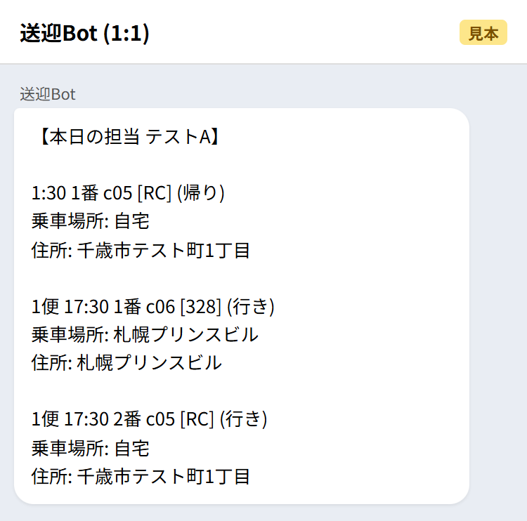
乗る順番・乗車場所・住所が並びます。

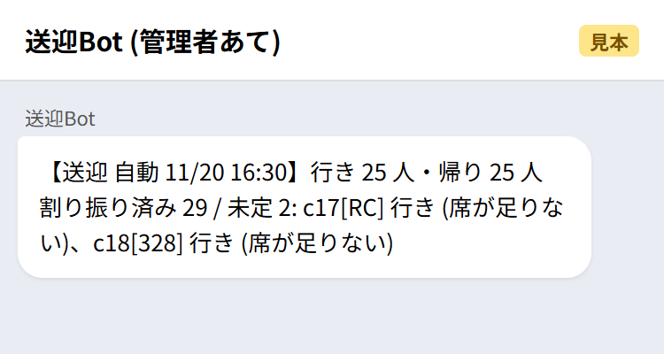
決まらなかった子の名前が出ます。
4. キャストへの送迎メール
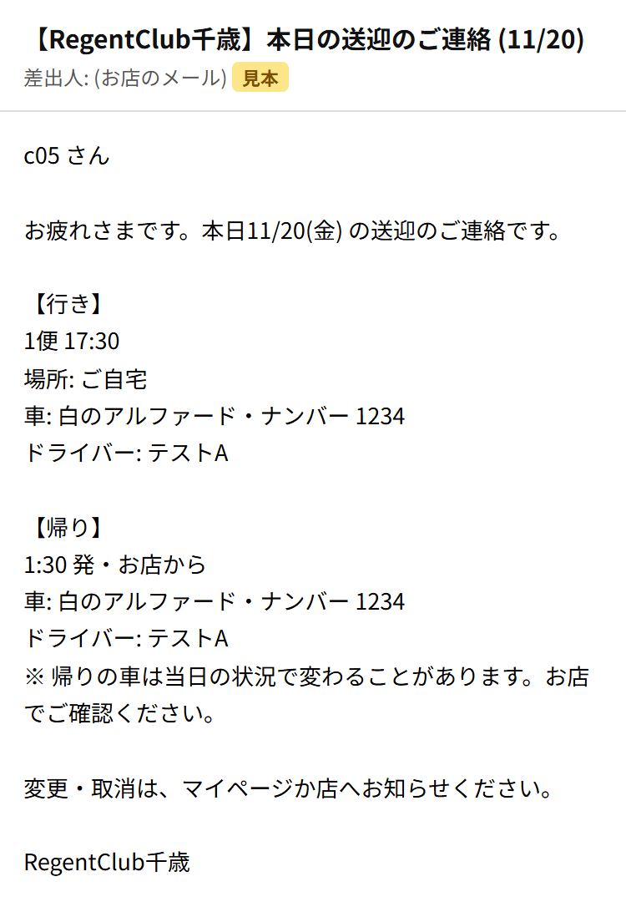
乗る便・場所・車・ナンバー・ドライバー名が書かれます。電話番号は入れません。車の色は、まだ表に無いドライバーさんの分は書かれません (上の「まだ決まっていないこと」)。